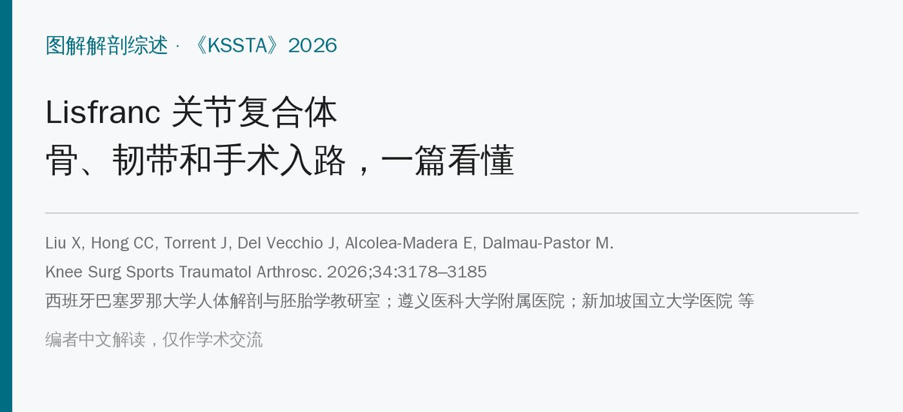
🔖原文信息（编者中文重排）
📚 文献信息
▪ Liu X, Hong CC, Torrent J, Del Vecchio J, Alcolea-Madera E, Dalmau-Pastor M. Anatomy of the Lisfranc joint complex: An illustrated review with surgical approach. Knee Surg Sports Traumatol Arthrosc. 2026;34:3178–3185. doi:10.1002/ksa.70260
▪ 作者单位：西班牙巴塞罗那大学人体解剖与胚胎学教研室；遵义医科大学附属医院骨科；新加坡国立大学医院骨科；巴塞罗那 Rabat 足踝诊所 等
▪ 文章类型：图解解剖综述（尸体标本照片 + 文献整理，附手术入路）；CC BY 开放获取
• Lisfranc 关节复合体不是一个关节，而是跖跗关节、跗骨间关节、近端跖骨间关节和一圈韧带组成的功能单元
• 第 2 跖骨基底像“拱顶石”一样嵌在内侧楔骨（C1）和外侧楔骨（C3）之间，是整个复合体稳定的核心
• 第 1、2 跖骨基底之间没有韧带，所以连接 C1 和 M2 的三条 Lisfranc 韧带（背侧、骨间、跖侧）至关重要；其中骨间韧带最强，背侧韧带最弱、最容易伤
• 榫卯越深、越宽越稳定；第 2 跖骨相对越短越容易受伤；负重像上 C1–M2 间距 ≥2 mm 提示不稳定
• 低能量单纯韧带伤漏诊可达 20%，延误会导致慢性不稳、关节炎和畸形；手术多走背内侧入路，复位从舟楔关系、M2 开始
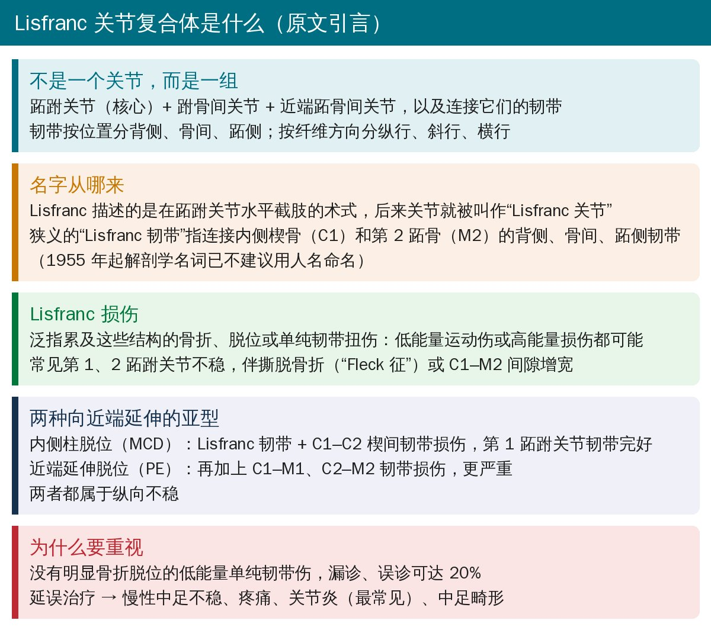
🔖概念与损伤分型（据原文引言整理）
作者特别提到一个常被忽略的点：低能量运动伤导致的单纯韧带损伤，症状轻微、影像不典型，漏诊或误诊可达 20%。一旦延误，最常见的后果是关节炎，此外还有慢性中足不稳、疼痛和畸形。
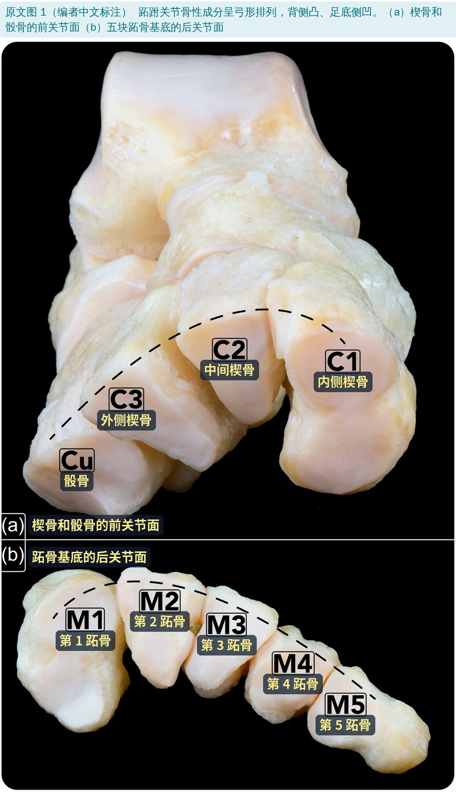
🔖原文图 1（编者中文标注） 跖跗关节骨性成分呈弓形排列，背侧凸、足底侧凹。（a）楔骨和骰骨的前关节面（b）五块跖骨基底的后关节面
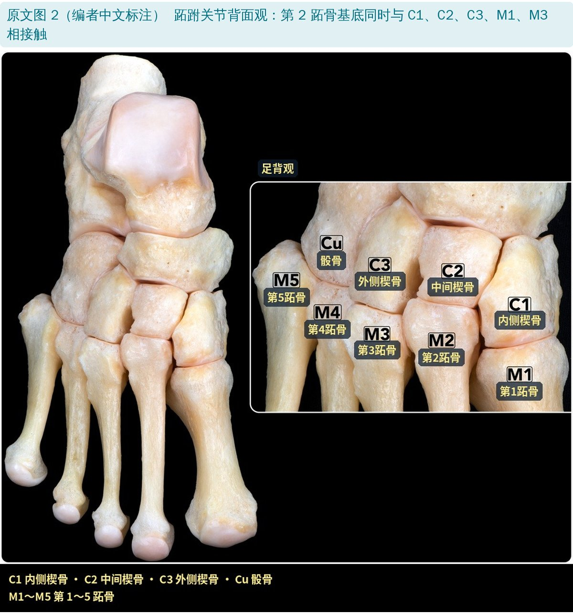
🔖原文图 2（编者中文标注） 跖跗关节背面观：第 2 跖骨基底同时与 C1、C2、C3、M1、M3 相接触
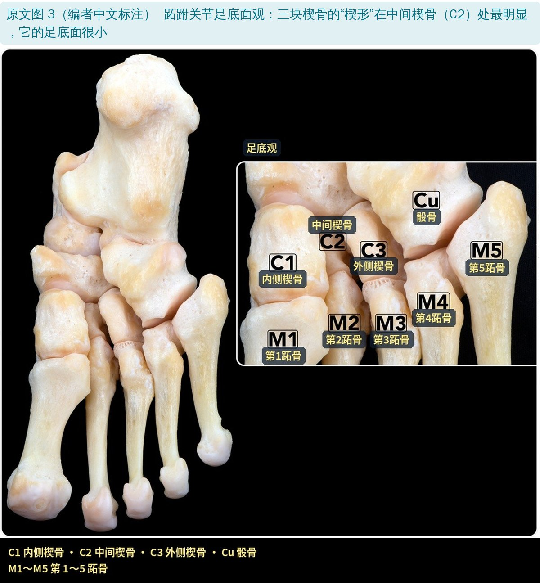
🔖原文图 3（编者中文标注） 跖跗关节足底面观：三块楔骨的“楔形”在中间楔骨（C2）处最明显，它的足底面很小
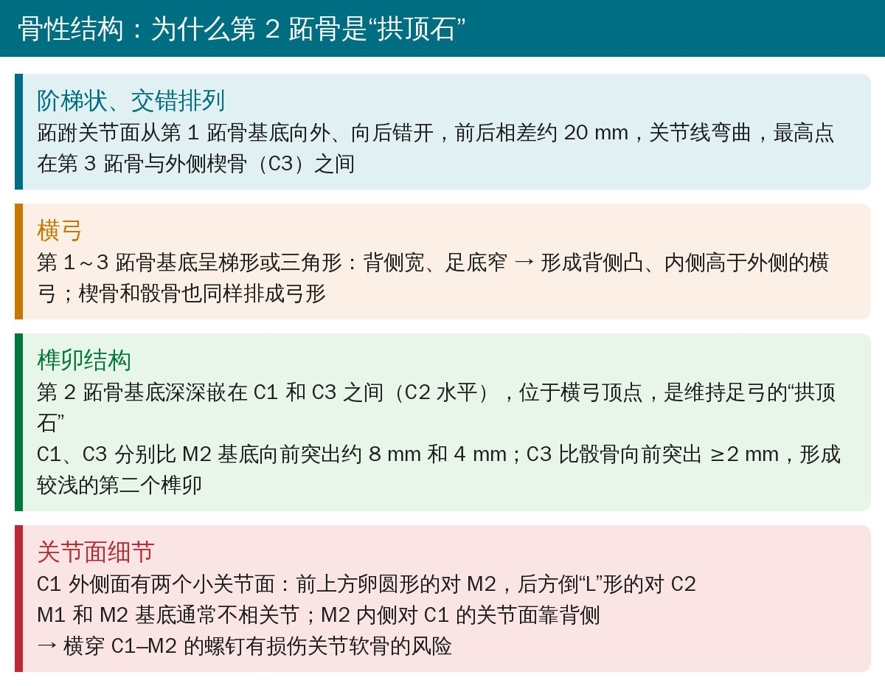
🔖骨性结构要点（据原文整理）
可以把这一段概括成三个关键词：阶梯错开、横弓、榫卯。第 2 跖骨基底比两边的 C1、C3 都“缩”进去，就像榫头插进卯眼里——C1 向前突出约 8 mm，C3 约 4 mm。这让跖跗关节几乎不动、非常稳定，也解释了为什么它一旦受伤就是大问题。
对手术有提示的一点：M2 内侧对 C1 的关节面偏背侧，横穿 C1–M2 的螺钉有损伤关节软骨的风险。
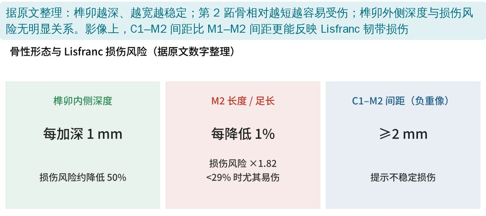
🔖据原文数字整理：骨性形态与 Lisfranc 损伤风险
• 榫卯内侧深度：越深越稳定，每加深 1 mm，损伤可能性约降低 50%；浅的榫卯缺少宽厚的 Lisfranc 韧带保护。外侧深度则与损伤无明显关系
• 第 2 跖骨长度 / 足长：比值每降低 1%，损伤可能性增加到 1.82 倍；低于 29% 时尤其易伤。作者认为可作为运动、职业人群的筛查指标
• 榫卯宽度：越宽，韧带越宽，越稳定
• 影像：负重 CT 或负重 X 线上，C1–M2 间距 ≥2 mm 提示不稳定损伤，比 M1–M2 间距更准确、更敏感
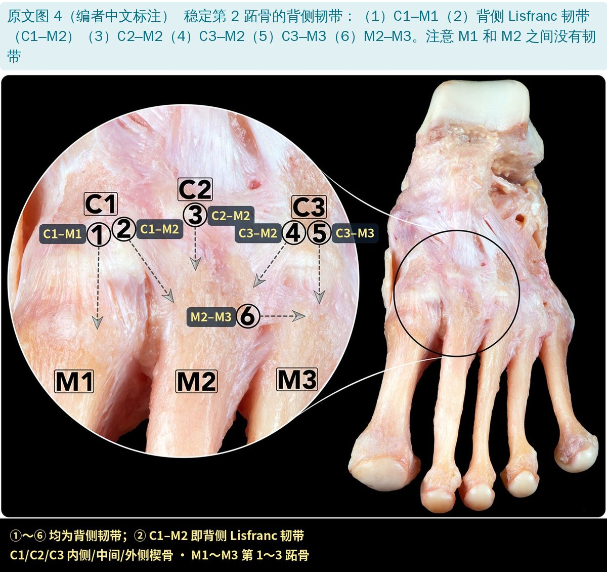
🔖原文图 4（编者中文标注） 稳定第 2 跖骨的背侧韧带：（1）C1–M1（2）背侧 Lisfranc 韧带（C1–M2）（3）C2–M2（4）C3–M2（5）C3–M3（6）M2–M3。注意 M1 和 M2 之间没有韧带
这张图最值得看的是“缺了什么”：外侧几块跖骨基底之间都有背侧、跖侧韧带相连，唯独 M1 和 M2 之间没有，只有薄弱的纤维组织。这里是天生的薄弱点，也正因为如此，C1 到 M2 的三条韧带才成为整个复合体的关键。
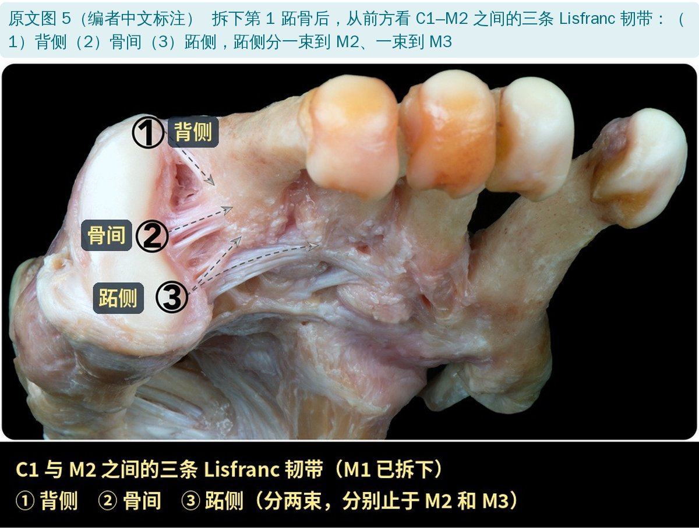
🔖原文图 5（编者中文标注） 拆下第 1 跖骨后，从前方看 C1–M2 之间的三条 Lisfranc 韧带：（1）背侧（2）骨间（3）跖侧，跖侧分一束到 M2、一束到 M3
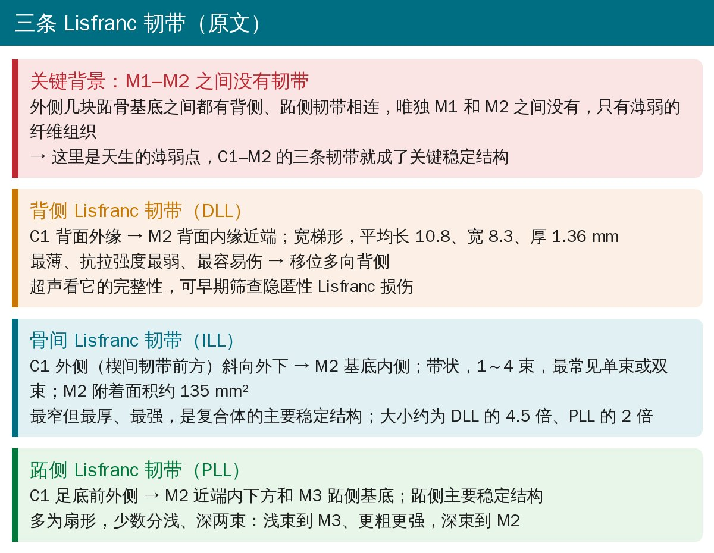
🔖三条 Lisfranc 韧带（据原文整理）
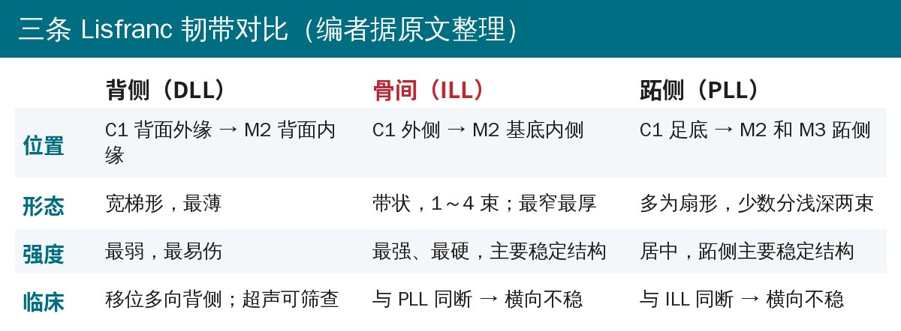
🔖三条韧带对比（编者据原文整理）
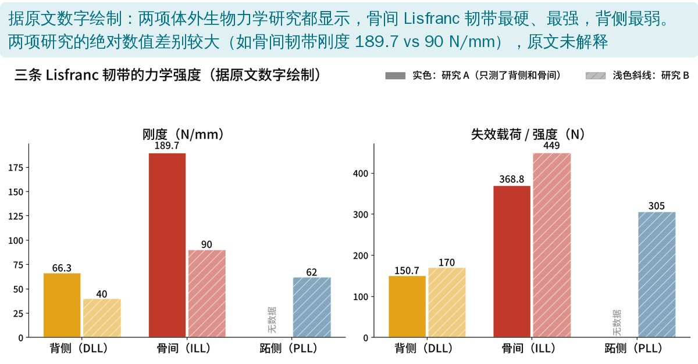
🔖据原文数字绘制：两项体外研究中三条韧带的刚度和失效载荷
| 背侧（DLL） | 骨间（ILL） | 跖侧（PLL） | |
|---|---|---|---|
| 研究 A 刚度（N/mm） | 66.3 ± 18.3 | 189.7 ± 57.2 | — |
| 研究 A 失效载荷（N） | 150.7 ± 33.1 | 368.8 ± 126.8 | — |
| 研究 B 刚度（N/mm） | 40 ± 9 | 90 ± 3 | 62 ± 3 |
| 研究 B 强度（N） | 170 ± 33 | 449 ± 58 | 305 ± 38 |
两项研究结论一致：骨间韧带最硬、最强（沿纤维方向加载时），背侧最弱。这也和临床相符——背侧韧带最先断，移位多向背侧。
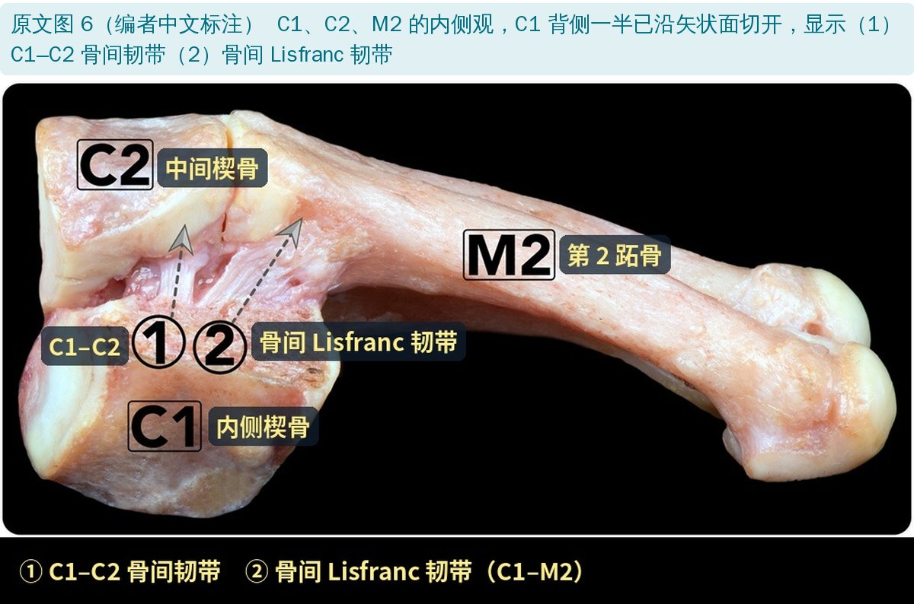
🔖原文图 6（编者中文标注） C1、C2、M2 的内侧观，C1 背侧一半已沿矢状面切开，显示（1）C1–C2 骨间韧带（2）骨间 Lisfranc 韧带
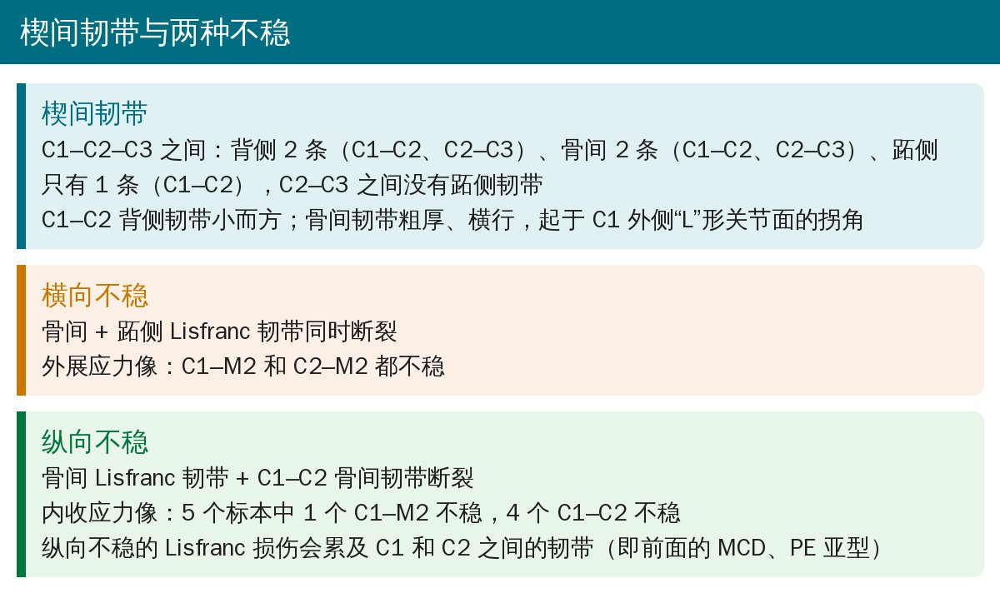
🔖楔间韧带与横向、纵向不稳（据原文整理）
| 类型 | 断裂的结构 | 应力像表现 |
|---|---|---|
| 横向不稳 | 骨间 + 跖侧 Lisfranc 韧带 | 外展应力：C1–M2、C2–M2 都不稳 |
| 纵向不稳 | 骨间 Lisfranc 韧带 + C1–C2 骨间韧带 | 内收应力：5 个标本中 4 个 C1–C2 不稳、1 个 C1–M2 不稳 |
纵向不稳对应引言里的两种亚型：内侧柱脱位（MCD）是 Lisfranc 韧带 + C1–C2 楔间韧带受伤；近端延伸脱位（PE）再加上 C1–M1、C2–M2 韧带，更严重。
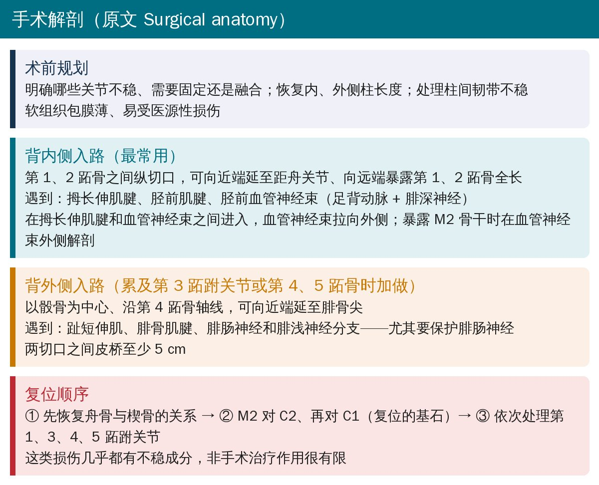
🔖手术入路与复位顺序（据原文整理）
• 背内侧入路：第 1、2 跖骨之间纵切口，多数 Lisfranc 损伤都累及第 2 跖跗关节，靠它就够了。要在拇长伸肌腱和胫前血管神经束（足背动脉 + 腓深神经）之间进入，把血管神经束拉向外侧
• 背外侧入路：累及第 3 跖跗关节或第 4、5 跖骨不稳时加做，沿第 4 跖骨轴线；注意保护腓肠神经。两切口之间皮桥至少 5 cm
• 复位顺序：先恢复舟骨与楔骨的关系 → 再把 M2 对上 C2、C1（复位的基石）→ 依次处理第 1、3、4、5 跖跗关节
• 作者认为这类损伤几乎都有不稳成分、可能进展为畸形，非手术治疗的作用很有限，解剖复位是重建稳定的关键
• 说骨间 Lisfranc 韧带“最窄但最厚”，但引用的三组数据里有一组宽 5.9 mm、厚 4.2 mm（宽大于厚），另一组厚 13.74 mm 却长只有 9.70 mm
• “内侧足背皮神经（腓浅神经分支）常在背内侧入路中遇到”这句话，被放在了描述背外侧入路的段落里
• 两项生物力学研究的绝对数值相差约一倍（骨间韧带刚度 189.7 vs 90 N/mm），原文并列给出、没有解释
欢迎关注骨科康复小黄公众号，获取更多物理治疗的专业知识！
📄参考文献：
Liu X, Hong CC, Torrent J, Del Vecchio J, Alcolea-Madera E, Dalmau-Pastor M. Anatomy of the Lisfranc joint complex: An illustrated review with surgical approach. Knee Surg Sports Traumatol Arthrosc. 2026;34:3178–3185. doi:10.1002/ksa.70260
原文为 CC BY 开放获取（© 2026 The Author(s)）。本文为中文解读：原文图 1～6 引自原文，编者在编号和骨名缩写旁加了中文名称，部分图下方加了中文图例条；其余整理卡和数据图由编者根据原文撰写、绘制。